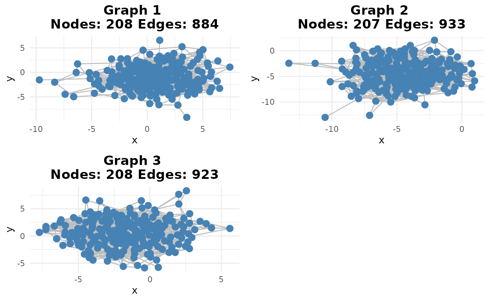

Getting Started with scGraphVerse
Francesco Cecere
Source:vignettes/simulation_study.Rmd
simulation_study.RmdBioconductor compliance
scGraphVerse is distributed through Bioconductor; it
adheres to the Bioconductor
package guidelines for documentation, versioning, and testing.
Please make sure to run BiocCheck::BiocCheck() before
submission, include unit tests under tests/, and follow the
code‐of‐conduct.
Introduction
Single‐cell RNA‐seq has opened new doors for reconstructing cell‐type‐specific gene regulatory networks (GRNs). scGraphVerse provides a streamlined workflow to:
- Simulate single‐cell count data (including zero‐inflation) via the
ZILGM framework[^ZILGM]
- Infer GRNs with multiple algorithms:
-
GENIE3[^GENIE3]
-
GRNBoost2[^GRNBoost2]
-
JRF[^JRF]
-
GENIE3[^GENIE3]
- Evaluate performance against a ground‐truth network
- Build consensus networks and explore network communities
Throughout this vignette we’ll highlight the core functions and point you to the original method papers.
Load and Pre‐process a Public Dataset
We start by downloading a PBMC dataset from the CellxGene atlas, subsetting to healthy CD4⁺ T cells, and applying standard QC filters (mitochondrial, ribosomal, feature and count thresholds).
# options(timeout = 2000)
# 1. Download the Seurat object
dataset_url <- "https://www.dropbox.com/s/r8qwsng79rhp9gf/SCA_scRNASEQ_TISSUE_WHOLE_BLOOD.RDS?dl=1"
sc_object <- download_Atlas(file_url = dataset_url)Define a “Ground‐Truth” Regulatory Network
We use high‐confidence STRINGdb edges as our ground truth. You can substitute any known adjacency matrix here.
# 1. Select top variable genes
pathgenes <- selgene(
object = sc_object,
top_n = 500,
cell_type = "T_cells",
cell_type_col = "CELL_TYPE",
remove_rib = TRUE,
remove_mt = TRUE
)
#> Using Seurat assay 'RNA' slot 'data' (log-normalized).
#> Subsetted to 923 cells where CELL_TYPE = 'T_cells'.
#> Removed mitochondrial genes matching '^MT-'.
#> Removed ribosomal genes matching '^RP[SL]'.
#> Top 500 genes selected based on mean expression.
# 2. Query STRINGdb for high‐confidence edges
result <- stringdb_adjacency(
genes = pathgenes,
species = 9606,
required_score = 900,
keep_all_genes = FALSE
)
#> Initializing STRINGdb...
#> Mapping genes to STRING IDs...
#> Mapped 500 genes to STRING IDs.
#> Retrieving **physical** interactions from STRING API...
#> Found 377 STRING physical interactions.
#> Adjacency matrices constructed successfully.
wadj <- result$weighted
adj <- result$binary
# 3. Symmetrize and sort
common <- intersect(rownames(adj), colnames(adj))
adj <- adj[common, common]
adj <- adj[sort(rownames(adj)), sort(colnames(adj))]
# 4. Visualize
gtruth <- igraph::graph_from_adjacency_matrix(adj, mode = "undirected")
ggraph::ggraph(gtruth, layout = "fr") +
ggraph::geom_edge_link(color = "gray") +
ggraph::geom_node_point(color = "steelblue") +
ggtitle(
paste0(
"Ground Truth: ", igraph::vcount(gtruth), " nodes, ",
igraph::ecount(gtruth), " edges"
)
) + theme_minimal()
Simulate Zero‐Inflated Count Data
We leverage a zero‐inflated network‐aware simulator based on the ZILGM framework1, which retains the ground‐truth dependencies in the counts.
nodes <- nrow(adj)
b <- 3
sigma <- 0.2
count_matrices <- zinb_simdata(
n = 50,
p = nodes,
B = adj,
mu_range = list(c(1, 4), c(1, 7), c(1, 10)),
mu_noise = c(1, 3, 5),
theta = c(1, 0.7, 0.5),
pi = c(0.2, 0.2, 0.2),
kmat = 3,
depth_range = c(round((1 - sigma) * nodes * b), round((1 + sigma) * nodes * b))
)
# Transpose each to cells × genes
count_matrices <- lapply(count_matrices, t)Infer Networks with Multiple Algorithms
#networks_late <- infer_networks(
# count_matrices,
# method = "GENIE3",
# nCores = 15
#)
#list_wadj <- generate_adjacency(networks_late)
#list_swadj <- symmetrize(list_wadj, weight_function = "mean")
#binary_adjm_list <- cutoff_adjacency(
# count_matrices = count_matrices,
# weighted_adjm_list = list_swadj,
# n = 2,
# method = "GENIE3",
# quantile_threshold = 0.95,
# nCores = 15,
# debug = TRUE
#)
#earlym <- list(earlyj(count_matrices))
#networks_early <- infer_networks(
# earlym,
# method = "GENIE3",
# nCores = 15
#)
#list_wadj <- generate_adjacency(networks_early)
#list_swadj <- symmetrize(list_wadj, weight_function = "mean")
#binary_adjm_list_early <- cutoff_adjacency(
# count_matrices = earlym,
# weighted_adjm_list = list_swadj,
# n = 2,
# method = "GENIE3",
# quantile_threshold = 0.95,
# nCores = 15,
# debug = TRUE
#)
networks_joint <- infer_networks(
count_matrices_list = count_matrices,
method = "JRF",
nCores = 15
)
list_wadjj <- generate_adjacency(networks_joint)
list_swadjj <- symmetrize(list_wadjj, weight_function = "mean")
binary_adjm_listj <- cutoff_adjacency(
count_matrices = count_matrices,
weighted_adjm_list = list_swadjj,
n = 2,
method = "JRF",
quantile_threshold = 0.95,
nCores = 15,
debug = TRUE
)
#> [Method: JRF] Matrix 1 → Cutoff = 0.55335
#> [Method: JRF] Matrix 2 → Cutoff = 0.58835
#> [Method: JRF] Matrix 3 → Cutoff = 0.58740
joint_auc <- plotROC(list_swadjj, adj, plot_title = "ROC curve - JRF Joint Integration", is_binary = FALSE)
joint_auc$plot
scores.joint <- pscores(adj, binary_adjm_listj)
plotg(binary_adjm_listj)
consesusm <- create_consensus(binary_adjm_listj, method="vote")
plotg(list(consesusm))
compare_consensus(consensus_matrix = consesusm, reference_matrix = adj, false_plot = FALSE)
adj_comm <- community_path(adj)
#> Detecting communities...#> Running pathway enrichment...
#> 'select()' returned 1:1 mapping between keys and columns
#> Reading KEGG annotation online: "https://rest.kegg.jp/link/hsa/pathway"...
#> Reading KEGG annotation online: "https://rest.kegg.jp/list/pathway/hsa"...
#> 'select()' returned 1:1 mapping between keys and columns
#> 'select()' returned 1:1 mapping between keys and columns
#> 'select()' returned 1:1 mapping between keys and columns
#> 'select()' returned 1:1 mapping between keys and columns
#> 'select()' returned 1:1 mapping between keys and columns
#> 'select()' returned 1:1 mapping between keys and columns
#> 'select()' returned 1:1 mapping between keys and columns
#> 'select()' returned 1:1 mapping between keys and columns
#> 'select()' returned 1:1 mapping between keys and columns
#> 'select()' returned 1:1 mapping between keys and columns
#> 'select()' returned 1:1 mapping between keys and columns
#> 'select()' returned 1:1 mapping between keys and columns
comm_consesusm <- community_path(consesusm)
#> Detecting communities...#> Running pathway enrichment...
#> 'select()' returned 1:1 mapping between keys and columns
#> 'select()' returned 1:1 mapping between keys and columns
#> 'select()' returned 1:1 mapping between keys and columns
#> 'select()' returned 1:1 mapping between keys and columns
#> 'select()' returned 1:1 mapping between keys and columns
#> 'select()' returned 1:1 mapping between keys and columns
#> 'select()' returned 1:1 mapping between keys and columns
#> 'select()' returned 1:1 mapping between keys and columns
#> 'select()' returned 1:1 mapping between keys and columns
#> 'select()' returned 1:1 mapping between keys and columns
topscore <- community_similarity(adj_comm,list(comm_consesusm))
query <- edge_mining(list(consesusm), adj, query_edge_types = "TP")
sessionInfo()
#> R version 4.4.2 (2024-10-31)
#> Platform: x86_64-pc-linux-gnu
#> Running under: Ubuntu 20.04.2 LTS
#>
#> Matrix products: default
#> BLAS: /usr/lib/x86_64-linux-gnu/blas/libblas.so.3.9.0
#> LAPACK: /usr/lib/x86_64-linux-gnu/lapack/liblapack.so.3.9.0
#>
#> locale:
#> [1] LC_CTYPE=en_US.UTF-8 LC_NUMERIC=C
#> [3] LC_TIME=it_IT.UTF-8 LC_COLLATE=en_US.UTF-8
#> [5] LC_MONETARY=it_IT.UTF-8 LC_MESSAGES=en_US.UTF-8
#> [7] LC_PAPER=it_IT.UTF-8 LC_NAME=C
#> [9] LC_ADDRESS=C LC_TELEPHONE=C
#> [11] LC_MEASUREMENT=it_IT.UTF-8 LC_IDENTIFICATION=C
#>
#> time zone: Europe/Rome
#> tzcode source: system (glibc)
#>
#> attached base packages:
#> [1] stats graphics grDevices utils datasets methods base
#>
#> other attached packages:
#> [1] lubridate_1.9.4 forcats_1.0.0 stringr_1.5.1 dplyr_1.1.4
#> [5] purrr_1.0.4 readr_2.1.5 tidyr_1.3.1 tibble_3.2.1
#> [9] ggplot2_3.5.2 tidyverse_2.0.0 Seurat_5.3.0 SeuratObject_5.1.0
#> [13] sp_2.2-0 scGraphVerse_0.1.0 BiocStyle_2.34.0
#>
#> loaded via a namespace (and not attached):
#> [1] IRanges_2.40.1 R.methodsS3_1.8.2
#> [3] gld_2.6.7 goftest_1.2-3
#> [5] Biostrings_2.74.1 vctrs_0.6.5
#> [7] ggtangle_0.0.6 spatstat.random_3.3-3
#> [9] perturbR_0.1.3 proxy_0.4-27
#> [11] digest_0.6.37 png_0.1-8
#> [13] Exact_3.3 pcaPP_2.0-5
#> [15] ggrepel_0.9.6 deldir_2.0-4
#> [17] parallelly_1.43.0 hdrcde_3.4
#> [19] MASS_7.3-54 pkgdown_2.1.2
#> [21] reshape2_1.4.4 httpuv_1.6.16
#> [23] foreach_1.5.2 BiocGenerics_0.52.0
#> [25] qvalue_2.38.0 withr_3.0.2
#> [27] xfun_0.52 ggfun_0.1.8
#> [29] ggpubr_0.6.0 survival_3.2-11
#> [31] memoise_2.0.1 clusterProfiler_4.14.6
#> [33] gson_0.1.0 systemfonts_1.2.2
#> [35] networkD3_0.4.1 ragg_1.4.0
#> [37] tidytree_0.4.6 zoo_1.8-14
#> [39] gtools_3.9.5 pbapply_1.7-2
#> [41] R.oo_1.27.0 Formula_1.2-6
#> [43] KEGGREST_1.46.0 promises_1.3.2
#> [45] httr_1.4.7 rstatix_0.7.2
#> [47] globals_0.17.0 hash_2.2.6.3
#> [49] fitdistrplus_1.2-2 fmsb_0.7.6
#> [51] rstudioapi_0.17.1 UCSC.utils_1.2.0
#> [53] miniUI_0.1.2 generics_0.1.3
#> [55] DOSE_4.0.1 reactome.db_1.89.0
#> [57] curl_6.2.2 S4Vectors_0.44.0
#> [59] zlibbioc_1.52.0 ggraph_2.2.1
#> [61] polyclip_1.10-7 GenomeInfoDbData_1.2.13
#> [63] SparseArray_1.6.2 xtable_1.8-4
#> [65] desc_1.4.3 pracma_2.4.4
#> [67] doParallel_1.0.17 JRF_0.1-4
#> [69] evaluate_1.0.3 S4Arrays_1.6.0
#> [71] hms_1.1.3 GenomicRanges_1.58.0
#> [73] bookdown_0.43 irlba_2.3.5.1
#> [75] colorspace_2.1-1 ROCR_1.0-11
#> [77] readxl_1.4.5 reticulate_1.42.0
#> [79] spatstat.data_3.1-6 magrittr_2.0.3
#> [81] lmtest_0.9-40 later_1.4.2
#> [83] viridis_0.6.5 ggtree_3.14.0
#> [85] lattice_0.20-44 spatstat.geom_3.3-6
#> [87] future.apply_1.11.3 scattermore_1.2
#> [89] XML_3.99-0.18 cowplot_1.1.3
#> [91] matrixStats_1.5.0 RcppAnnoy_0.0.22
#> [93] class_7.3-19 pillar_1.10.2
#> [95] nlme_3.1-152 iterators_1.0.14
#> [97] caTools_1.18.3 compiler_4.4.2
#> [99] RSpectra_0.16-2 stringi_1.8.7
#> [101] DescTools_0.99.60 tensor_1.5
#> [103] SummarizedExperiment_1.36.0 plyr_1.8.9
#> [105] fda_6.2.0 crayon_1.5.3
#> [107] abind_1.4-8 gridGraphics_0.5-1
#> [109] chron_2.3-62 haven_2.5.4
#> [111] graphlayouts_1.2.2 org.Hs.eg.db_3.20.0
#> [113] bit_4.6.0 rootSolve_1.8.2.4
#> [115] fastmatch_1.1-6 codetools_0.2-18
#> [117] textshaping_1.0.0 bslib_0.9.0
#> [119] e1071_1.7-16 lmom_3.2
#> [121] fds_1.8 plotly_4.10.4
#> [123] mime_0.13 multinet_4.2.2
#> [125] splines_4.4.2 Rcpp_1.0.14
#> [127] fastDummies_1.7.5 cellranger_1.1.0
#> [129] datastructures_0.2.9 knitr_1.50
#> [131] blob_1.2.4 robin_2.1.0
#> [133] fs_1.6.6 listenv_0.9.1
#> [135] expm_1.0-0 ggsignif_0.6.4
#> [137] ggplotify_0.1.2 sqldf_0.4-11
#> [139] Matrix_1.7-3 tzdb_0.5.0
#> [141] tweenr_2.0.3 pkgconfig_2.0.3
#> [143] tools_4.4.2 cachem_1.1.0
#> [145] RSQLite_2.3.9 viridisLite_0.4.2
#> [147] DBI_1.2.3 distributions3_0.2.2
#> [149] graphite_1.52.0 fastmap_1.2.0
#> [151] rmarkdown_2.29 scales_1.3.0
#> [153] grid_4.4.2 ica_1.0-3
#> [155] broom_1.0.8 sass_0.4.10
#> [157] patchwork_1.3.0 INetTool_0.1.0
#> [159] BiocManager_1.30.25 dotCall64_1.2
#> [161] graph_1.84.1 carData_3.0-5
#> [163] RANN_2.6.2 farver_2.1.2
#> [165] tidygraph_1.3.1 gsubfn_0.7
#> [167] yaml_2.3.10 deSolve_1.40
#> [169] MatrixGenerics_1.18.1 cli_3.6.5
#> [171] stats4_4.4.2 lifecycle_1.0.4
#> [173] askpass_1.2.1 uwot_0.2.3
#> [175] Biobase_2.66.0 rainbow_3.8
#> [177] mvtnorm_1.3-3 backports_1.5.0
#> [179] BiocParallel_1.40.2 timechange_0.3.0
#> [181] gtable_0.3.6 ggridges_0.5.6
#> [183] progressr_0.15.1 parallel_4.4.2
#> [185] pROC_1.18.5 ape_5.8-1
#> [187] jsonlite_2.0.0 RcppHNSW_0.6.0
#> [189] bitops_1.0-9 bit64_4.6.0-1
#> [191] Rtsne_0.17 yulab.utils_0.2.0
#> [193] ReactomePA_1.50.0 spatstat.utils_3.1-3
#> [195] proto_1.0.0 jquerylib_0.1.4
#> [197] GOSemSim_2.32.0 spatstat.univar_3.1-2
#> [199] R.utils_2.13.0 lazyeval_0.2.2
#> [201] shiny_1.10.0 htmltools_0.5.8.1
#> [203] enrichplot_1.26.6 GO.db_3.20.0
#> [205] sctransform_0.4.1 data.tree_1.1.0
#> [207] rappdirs_0.3.3 glue_1.8.0
#> [209] STRINGdb_2.18.0 spam_2.11-1
#> [211] XVector_0.46.0 qpdf_1.3.5
#> [213] RCurl_1.98-1.17 treeio_1.30.0
#> [215] mclust_6.1.1 ks_1.14.3
#> [217] gridExtra_2.3 boot_1.3-28
#> [219] igraph_2.1.4 R6_2.6.1
#> [221] fdatest_2.1.1 SingleCellExperiment_1.28.1
#> [223] gplots_3.2.0 labeling_0.4.3
#> [225] cluster_2.1.2 aplot_0.2.5
#> [227] GenomeInfoDb_1.42.3 DelayedArray_0.32.0
#> [229] tidyselect_1.2.1 plotrix_3.8-4
#> [231] ggforce_0.4.2 car_3.1-3
#> [233] AnnotationDbi_1.68.0 future_1.40.0
#> [235] munsell_0.5.1 KernSmooth_2.23-20
#> [237] data.table_1.17.0 htmlwidgets_1.6.4
#> [239] fgsea_1.32.4 RColorBrewer_1.1-3
#> [241] rlang_1.1.6 spatstat.sparse_3.1-0
#> [243] spatstat.explore_3.4-2 rentrez_1.2.3